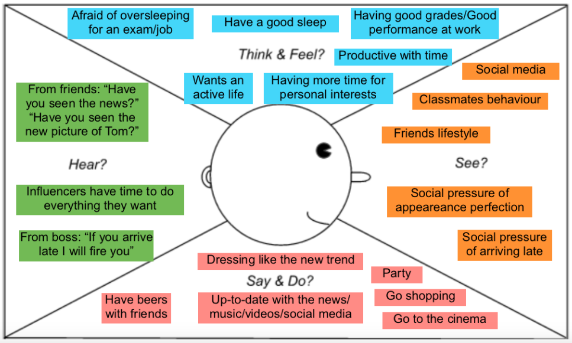
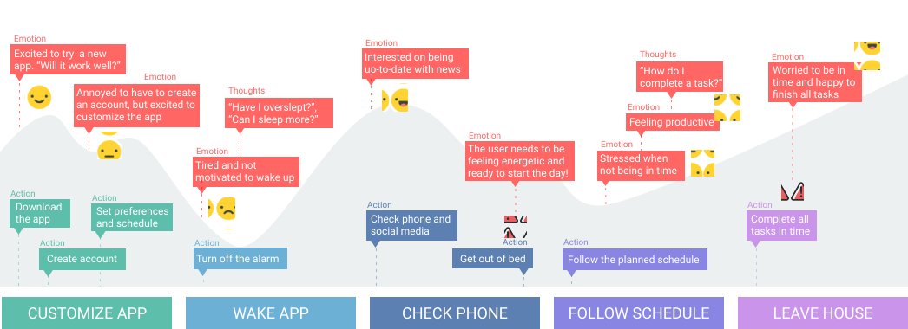
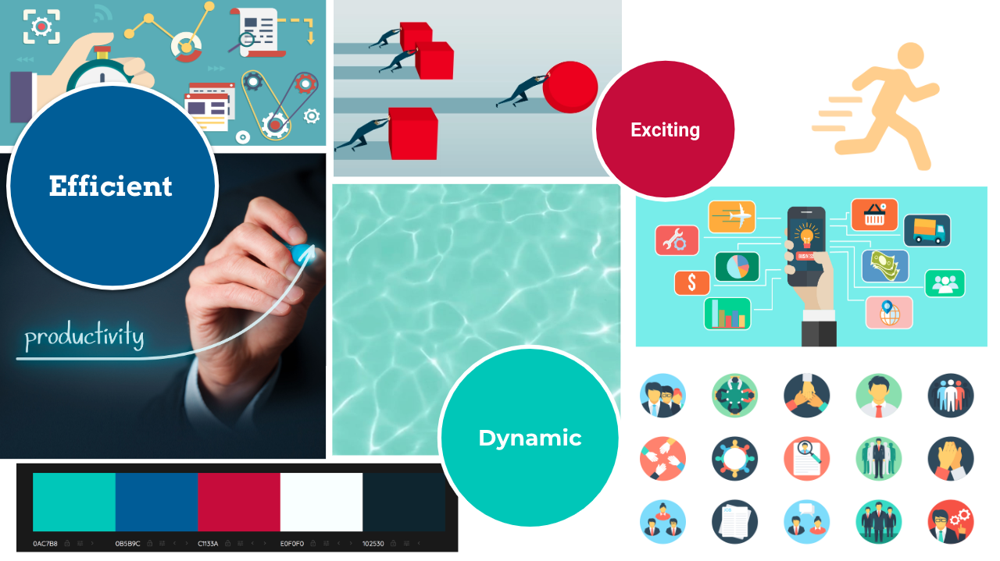
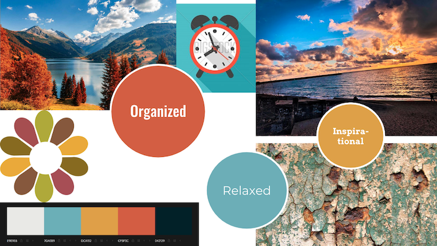
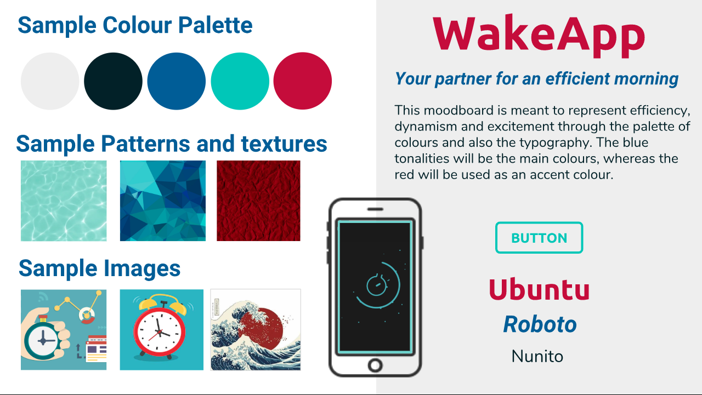

Project for a course in User Experience and Mobile Prototyping. It consisted of a process of making interviews, finding a need, creating personas and task scenarios, making a storyboard and a user journey map. Finally, from that, we created moodboards and a prototype (using Justinmind) for a waking up mobile app. Worked in collaboration with other UPM students: Niels Dikken, Paula Manzano and Tobias Piffrader.
Making interviews
Goal is to understand the user needs and find a solution to the user’s problem
Specifying the context of use
Goal is to define the user by creating “User Profiles”, then the task scenario and the environment around the user
After doing an analysis of the interviews, we created an empathy map to understand better the user environment and to be able to identify the users profiles.
We identified two different kinds of user profiles, the disorganized user and the information consumer. The disorganized user just wants to keep sleeping and is always in a rush. They need to keep a tight schedule and receive continuous notifications in order to be on time. Contrarily, the information consumer is usually on time, so this user just needs to have a smooth wake up, comfortably checking up the phone notifications and the news.
“Wakeapp” must fulfill the needs for both of these users. Therefore, the application will have an explore section to get the most relevant insights of your day and also a section for planning your morning routine and keep track of your schedule.
The next step was to create a user journey map in order to follow the steps the user will be doing with the mobile application. This metholodology ables to easily identify the pain points of the user and the moments of truth during the journey.
The next step was to start the design of the prototype. Because of lack of time in the course, we skipped the layouts and low-fidelity prototype. Instead, with my team, we created 2 different loose moodboards with different designs to present to the client.
 The client decided he preferred the first design. Therefore, the team created a refined moodboard according to the efficient, exciting and dynamic moodboard. In the refined version, it was defined the colour palette, the typography, different textures and patterns and some images to get some inspiration.
